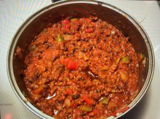

Chili

A pot of chili
Description:
Yummy chili with veggies and stuff.
Ingredients:
- 1 pound ground beef
- 2-3 spears of celery
- 2 large carrots
- 2 bell peppers - whichever colors you prefer
- 1 anaheim pepper
- 1 large sweet onion
- 1 jar spaghetti sauce. I like garlic and onion flavors
- 2 cans diced tomatoes
- 2 cans red kidney beans
- 1 can black beans
- 1 can corn
- Chili powder
- Cayenne pepper
- Garlic powder
- Grated cheese - cheddar or pepper jack work well
Steps
- Dice carrots, onion, peppers and celery. I like them kind of chunky. I remove the seeds from the anaheim pepper. In a large pot, brown ground beed and saute onions, carrots and celery.
- Add spaghetti sauce. Drain beans and rinse beans and add those. Add corn and tomatoes.
- Mix everything together and heat till boiling. My seasoning is more art than science. I don't use tons of garlic powder. The others I'm a bit heavy handed with. Add some, stir and taste. be careful with the cayenne - a little goes a long way. Set burner to low, cover the pot and simmer, stirring occasionally. At least half an hour.
I serve in a bowl and top with the cheese. Sometimes we used sliced green onion for added flavor.
Return to Recipes